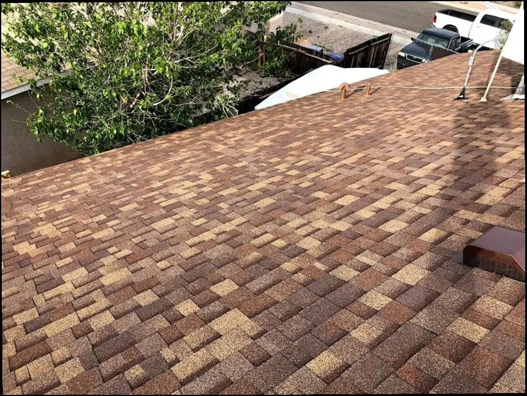

Service01
Mentioned in Google reviews
Roof replacement
Reviewers describe full replacements: old shingles torn off, fresh underlayment, new shingles and a finished ridge cap, with the property cleaned up each day.
Call for pricingCall
Garcia Brothers Roofers LLC takes on roof replacements, shingle and metal options, siding and gutters in Odessa, Texas. Customers rate them 4.8 on Google.
4.8154 Google reviews
Taken from what customers say in their Google reviews. Prices are not published online, so call for a number.
Reviewers describe full replacements: old shingles torn off, fresh underlayment, new shingles and a finished ridge cap, with the property cleaned up each day.
A customer says the choice between asphalt shingles and metal was explained in simple terms. Another picked Class 4 high-impact shingles for Texas weather.
Metal roofing was one of the options walked through on a roof check. “Metal roof” also shows up among the topics Google pulls from reviews.
One customer had siding done together with two roof replacements and says the siding crew stayed late to finish properly.
The same customer had gutters and downspouts installed and describes the work as quick, clean and working properly.
A reviewer says someone came out to the house, checked the roof carefully and gave a clear quote. Call to ask what a visit involves.
Someone comes out to the house and looks over the roof, then talks through the options in plain terms.
The customer received a clear quote with details so they knew what to expect before agreeing.
Old shingles come off and fresh underlayment goes down before anything new is laid.
New shingles go on, the ridge cap finishes the job, and the property is picked up each day.
Based on a verbatim Google review of a full roof replacement in Odessa. Your project may differ, so ask when you call.
This is by far the best roofing and exterior company I have worked with. We had two roof replacements done, along with siding, gutters, and downspouts. Every crew was skilled, professional, and easy to work with. The roofing team worked hard and efficiently, even in the strong Texas heat, and they did an excellent cleanup when the job was finished. The siding crew delivered the same high level of service and stayed late to make sure everything was completed the right way. The gutter crew also did a great job, worked quickly, and made sure the installation looked clean and functioned properly. The management team was outstanding throughout the whole process. They kept us updated on the schedule, explained each step clearly, and made sure the project stayed on track from start to finish. It was clear they cared about quality workmanship and customer service. I have recommended them to friends, and I have only heard great feedback from others as well. If you need roofing, siding, or gutter work, this company does excellent work and stands behind the job. They really are one of the best.
herbert and his crew had already finished several roofs around our neighborhood and the results looked great. When we were ready for a full roof replacement, we called Garcia Brothers Roofers Llc. herbert came out in Odessa, checked the roof carefully, explained the options between asphalt shingles and metal roofing, and answered all our questions in simple terms. He also gave us a clear quote with helpful details so we knew what to expect. After we moved forward, the work date was set and the roofing crew showed up early and got right to it. They removed the old shingles, installed fresh underlayment, and started laying the new shingles with real care and good workmanship. It was easy to see they knew roofing well and paid attention to every step. One thing we really appreciated was how clean they kept the property at the end of each day. Nails, debris, and materials were picked up so well it barely looked like a roofing project had been going on. A couple of days later, they finished the ridge cap and completed the job. The new roof looks strong, neat, and professionally installed, and it fits the house perfectly for the hot Odessa weather. we were very happy with the whole process and would hire them again anytime.
I can’t say enough good things about our experience with this roofing team. From the start, everything was handled in a professional and easy way. Every part of the insurance claim was explained clearly, and Brendan worked smoothly with our adjuster to help keep the process moving. We never felt pushed into choosing anything, and all of our questions about the roof system, shingle options, and installation were answered in simple terms. The roofing materials arrived on time, and the delivery was done carefully to keep disruption around our home to a minimum. The crew did an excellent job. They protected our landscaping, kept the job site neat each day, and made sure the cleanup was thorough when the work was finished. There was no leftover debris, and they paid close attention to details from start to finish. The new roof looks fantastic and has really improved the appearance of our home in Odessa. We chose high-impact Class 4 shingles, which are a great fit for Texas weather, including strong sun, wind, and storms. We also selected high-profile ridge caps, and they gave the roof a sharp, finished look that we really love. Matthew, Herbert, and Brendan were a pleasure to work with, and the whole team made the project feel smooth and stress-free. My husband and I would gladly recommend this roofing company to anyone needing quality roof replacement, great communication, and dependable service.
Selection of verbatim Google reviews, rating as shown on Google November 2026. View the Google profile.
Rooftop photos found on the Google Maps listing. We cannot confirm which jobs they show, so they are not presented as the company’s finished work.
| Monday | 9 AM – 5 PM |
| Tuesday | 9 AM – 5 PM |
| Wednesday | 9 AM – 5 PM |
| Thursday | 9 AM – 5 PM |
| Friday | 9 AM – 5 PM |
| Saturday | Closed |
| Sunday | Closed |
Hours as listed on Google. Call to confirm on holidays.
The Google profile is for Odessa, and the reviews come from Odessa homes. Outside town? Call and ask first.
Phone: (432) 220-2400
Topics Google highlights in reviews (number of reviews that mention each):
Monday to Friday, 9 AM to 5 PM. Closed Saturday and Sunday, as listed on Google. Hours can change around holidays, so call to confirm.
Call (432) 220-2400 or send a request from the Contact page. Prices are not published online. One reviewer says someone came out, checked the roof and gave a clear quote.
Reviews mention asphalt shingle roofs (including Class 4 shingles) and metal roofing as options, plus siding and gutters. Call and describe your roof before you count on anything else.
The Google profile is for Odessa, Texas, and reviews come from Odessa homes. If you are outside Odessa, call and ask before assuming.
None of these are listed on the Google profile, so this site does not promise them. A customer wrote about insurance paperwork in a review, but ask the company directly what applies to you.
Call and tell them what you are dealing with, or send a request and they will get back to you.